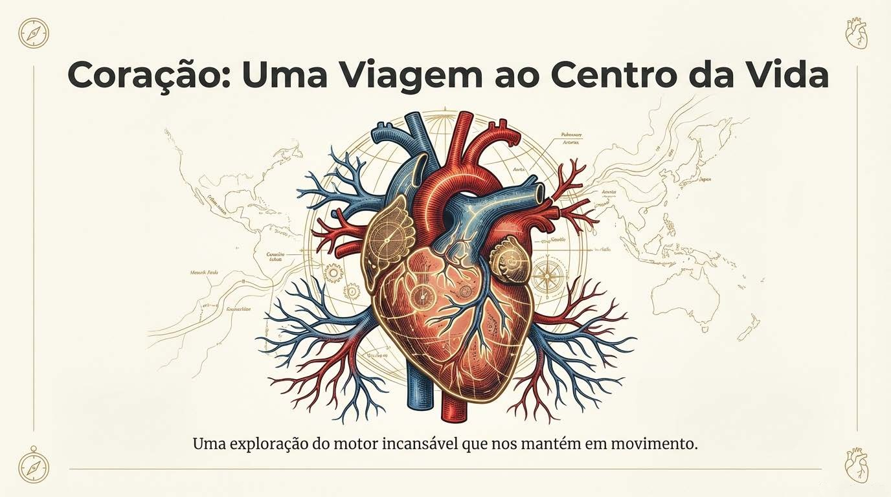
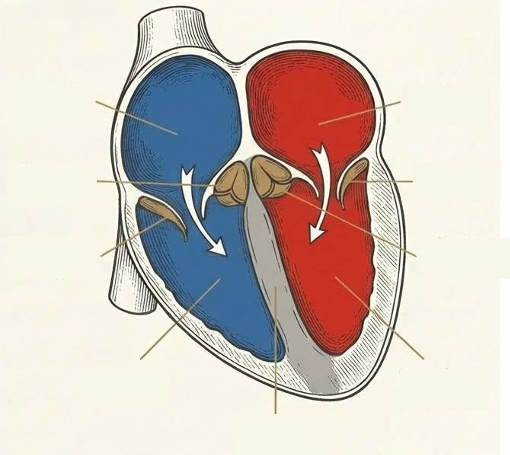

CORAÇÃO
"Uma Viagem ao Centro da Vida"
Bem-vindo ao Guia Interativo do Sistema Cardiovascular. Explore a anatomia, compreenda o ciclo cardíaco e teste os seus conhecimentos através de recursos visuais e jogos.
Começar ViagemGUIA DE ESTUDO
Introdução Multimédia
Galeria Anatómica
1 / 15

Clique na imagem para ampliar.
FLASHCARDS & TREINO
Clique nos cartões para ver a resposta ou jogue o jogo de correspondência.
Correspondência: Termo vs Definição
ANATOMIA INTERATIVA
Arraste os termos (ou clique para selecionar) e solte sobre o número correto na imagem.

Legenda
GLOSSÁRIO
Termos Chave
Desafio Rápido
Associe o termo correto à definição apresentada.
Carregando...
AVALIAÇÃO & CERTIFICAÇÃO
Responda ao questionário para obter o seu certificado.
Questionário Final
Pontos: 0